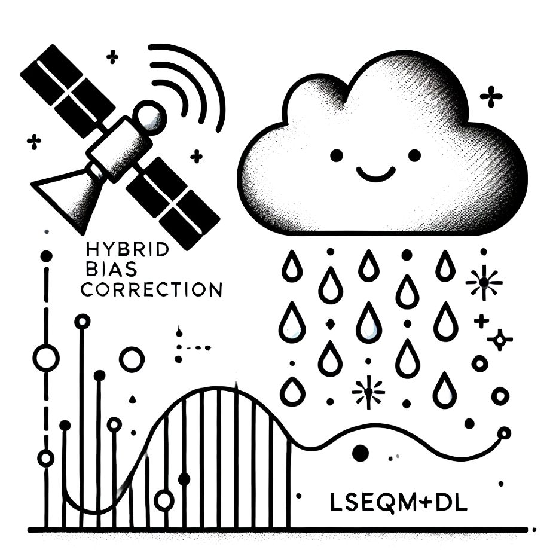
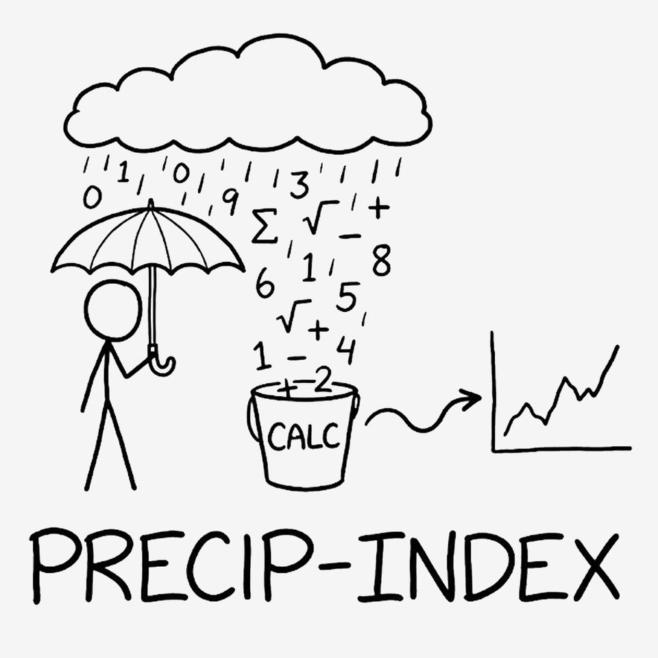
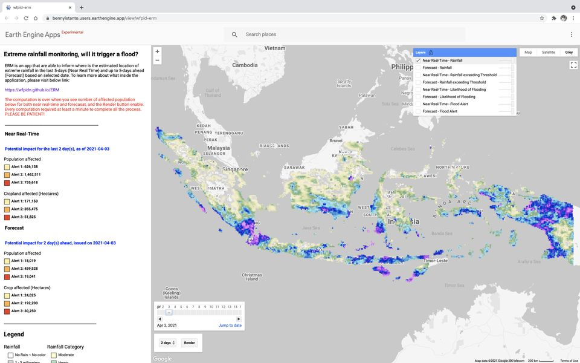
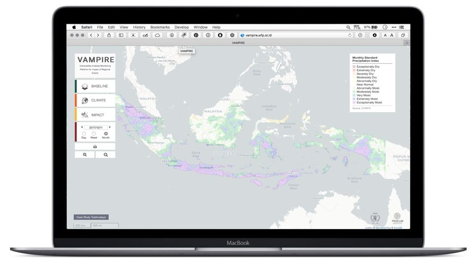
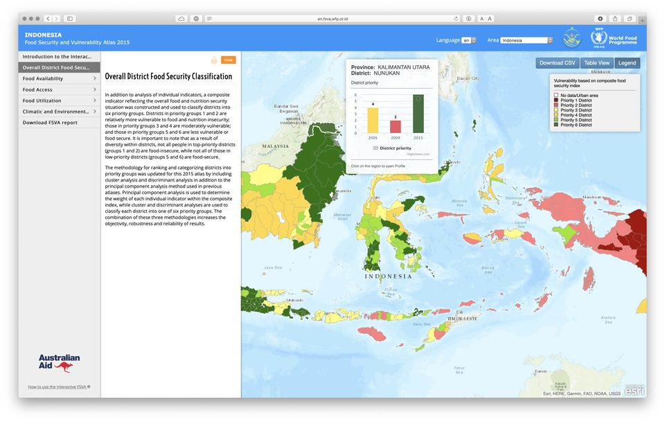
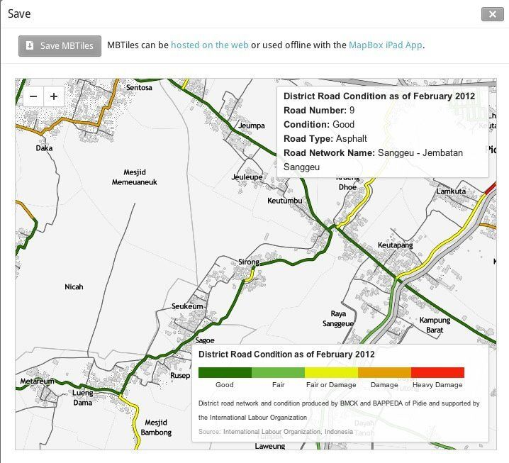
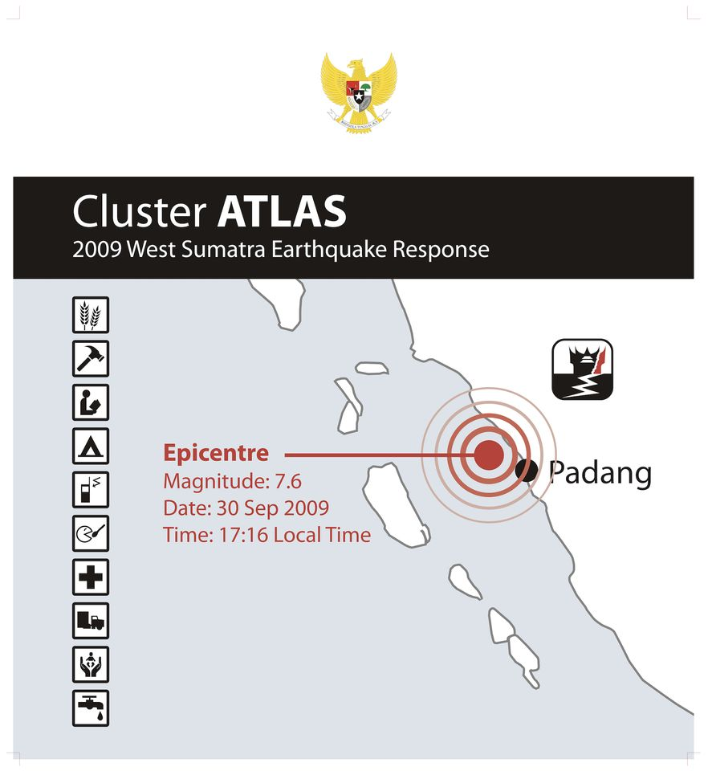
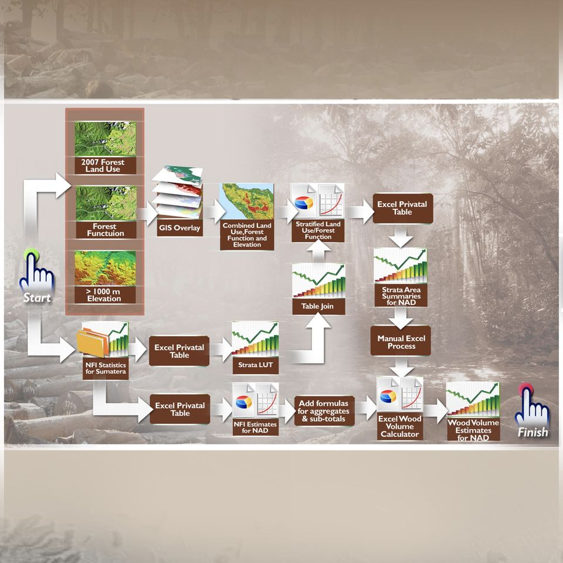
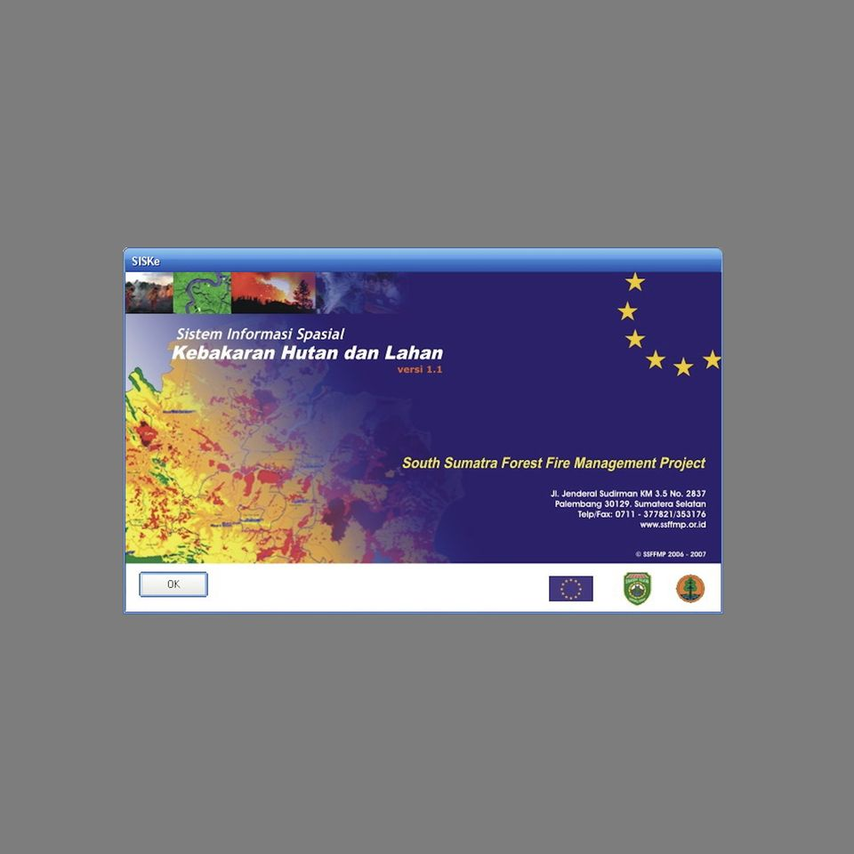

§ 01 · Legend
Six kinds of work, one symbol each.
Every map explains itself in its legend. This is ours: what the practice does, and what you receive at the end of it.
-
Atmospheric Science & Climate Risk
Quantitative analytics to decipher climate patterns and strengthen environmental resilience.
Deliverables
- Hydrometeorological monitoring systems
- Agro-climatological modeling
- Spatio-temporal climate analysis
- Climate change impact assessments
- Climate indices calculation and interpretation
-
GIS, Remote Sensing & Spatial Modeling
Transforming complex satellite imagery and spatial data into actionable visual intelligence.
Deliverables
- Crop phenology and vegetation health monitoring
- Land use change detection
- Multi-criteria site suitability analysis
- Nightlight analytics
- Satellite image classification
-
Climate & Geo-Statistics Data Processing
Building robust pipelines for automated data management and rigorous scientific validation.
Deliverables
- Automated ETL (Extract, Transform, Load) pipelines
- Google Earth Engine workflows
- Spatial Data Infrastructure (SDI) implementation
- Database design and optimization
- Geo-statistical modeling
-
Impact Science & Early Warning
Frameworks that translate hazard data into anticipatory action and decision support.
Deliverables
- Impact-based forecasting systems
- Early Warning Early Action (EWEA) protocols
- Hydro-meteorological risk profiling
- Vulnerability assessments
- Operational decision support tools
-
Capacity Development
Empowering teams with the technical skills to manage and analyze geospatial data independently.
Deliverables
- QGIS and ArcGIS technical training
- Python for geospatial analysis
- Google Earth Engine bootcamps
- Climate data processing workshops
- Custom curriculum development
-
Proposal Development
Structuring technical concepts into winning proposals for funding and project implementation.
Deliverables
- Concept notes and logical frameworks
- Methodology and technical approach design
- Geospatial component integration
- Resource and budget planning
- Donor-specific technical documentation
§ 02 · Record of service
Two decades, fourteen institutions.
The company was incorporated in 2026. The record below is that of its principal, Benny Istanto, who has worked for these institutions as staff or consultant since 2004. Point at a line to read it.
- Roles, projects and dates appear here.
Full detail, including the list of World Bank projects supported, is on the principal's site: benny.istan.to/works/experiences.
§ 03 · Plates
Selected work, 2007 to 2026.
It all begins with an idea, then it becomes something else. Nine pieces of the principal's work in earth observation, climate analysis and data science, each linked to its full write-up.

Hybrid Bias Correction
Adjusting values, aligning distributions, preserving extremes in daily satellite precipitation. MSc thesis, IPB University.

precip-index
SPI and SPEI for climate extremes monitoring. GOST, DEC Data Group, The World Bank.

Extreme Rainfall Monitoring
Where extreme rainfall fell, and whether it will trigger a flood. WFP Indonesia.

VAMPIRE
Vulnerability Analysis and Monitoring Platform for Impact of Regional Events. WFP Indonesia.

Interactive FSVA
The 2015 Food Security and Vulnerability Atlas of Indonesia, online. World Food Programme.

Aceh Road Network
District road network and condition, per 100 meters, in Pidie and Bireuen. International Labour Organization.

Cluster Atlas
West Sumatra Earthquake Response 2009. UN Office of the Humanitarian/Resident Coordinator.

Aceh Forest Information System
Forestry Information System user guides. Asian Development Bank, ETESP.

SISKe
Spatial Information System for Forest and Land Fire. South Sumatra Forest Fire Management Project.
§ 04 · Contact
Tell us where the question is.
Schedule a consultation or write to discuss your project needs.
Smaller scopes
For smaller, fixed-scope work, a packaged gig is often the quickest way to get started. Services are also offered via Fiverr.
For students
If you are a student seeking advice on climate and geospatial problems, please save your budget. Post your question in the @gis_id Telegram group and it will be answered there for free.